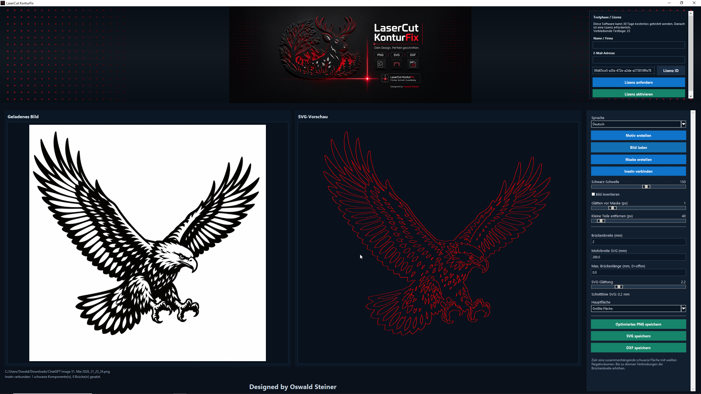

Maske erstellen
Schwarz-Schwelle einstellen, Bild invertieren, stoerende Kleinteile entfernen und eine klare Schnittmaske erzeugen.
LaserCut KonturFix wandelt Bilder in saubere SVG- und DXF-Dateien fuer den Lasercutter um. Mit Maskenerstellung, Inselverbindung, Glaettung, Bruecken und direktem Export.
Vom geladenen Bild bis zur exportierten Schnittdatei: alle wichtigen Schritte fuer laserfaehige Motive in einer kompakten Oberflaeche.
Schwarz-Schwelle einstellen, Bild invertieren, stoerende Kleinteile entfernen und eine klare Schnittmaske erzeugen.
Lose Bereiche koennen mit einstellbarer Brueckenbreite verbunden werden, damit das Motiv stabil geschnitten werden kann.
Speichert optimierte Konturen mit einstellbarer Motivbreite und SVG-Glaettung fuer typische Laser-Workflows.

Die App fuehrt durch die wichtigsten Schritte, ohne dass man zwischen mehreren Programmen wechseln muss.
Bild oder Motiv laden
Maske berechnen
Glattung und Details anpassen
Inseln verbinden
SVG oder DXF speichern
Ein kurzer Blick auf den Workflow und die Moeglichkeiten von LaserCut KonturFix.
Lade den Windows-Installer direkt aus dem GitHub-Repository herunter. Die Software enthaelt eine Testphase und kann anschliessend per Lizenz aktiviert werden.